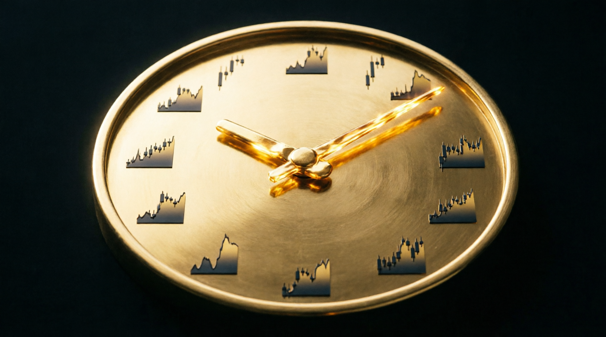

📰 سیکلها و فازهای مارکت
🎯 مقدمه: بازار، میدان جنگ
بازار مثل یک جنگ است؛ بدون آگاهی وارد نشوید. در فارکس، دستکاری یا مانیپولیشن قیمت توسط بانکها و موسسات مالی بزرگ انجام میشود — هدفشان سود بردن به قیمت ضرر خردهتریدرهاست. این دستکاری از طریق شایعات، الگوریتمهای فرکانس بالا (HFT) و اطلاعات داخلی صورت میگیرد.
هستهٔ هر معامله ساده است: ارزان بخر، گران بفروش. اما موفقیت ۱۰۰٪ تضمینشده نیست؛ نیازمند دانش، استراتژی، درک زمان (Time) و مدیریت ریسک است.
🌊 چهار فاز مارکت
جابهجایی پول
Money Transfer — جابهجایی پول ماژور بین بانکها. با واگرایی (DIV) و بیلدآپ، تارگت حرکت بعدی ساخته میشود.
حفاظت از سفارشها
قیمت از سفارشهای موجود محافظت میکند.
- میتیگیشن کمعمق: حفظ سفارشها + ادامهٔ حرکت
- میتیگیشن عمیق: جابهجایی کامل پول + فاز جدید
فاز فیک (Trapping)
بازگشت جعلی (Fake Reversal) برای به دام انداختن تریدرهای بیشتر؛ بیلدآپ الگو (Fake Distribution) خردهتریدرها را به نواحی تله میکشاند.
حرکت واقعی
پس از تکمیل تلهها، حرکت اصلی در جهت پول هوشمند آغاز میشود — اینجاست که تریدر ساختارخوان سود میگیرد.
🕯️ استخرهای نقدینگی — جایی که پول هوشمند تلههایش را میکارد
⏱️ سایکل ۹۰ دقیقه
بعد از هر ۹۰ دقیقه (سایکل ۹۰)، یک جریان سفارش الگوریتمی جدید (Order Flow) ایجاد میشود. این چرخه، ستون فقرات زمانبندی ورودهای ماست.
- سفارش اصلی: در سقف سایکل ۹۰ دقیقه
- سفارش جعلی: در اوپن قیمتِ کف سایکل
- استاپلاس: بالای سقف سایکل ۹۰ دقیقه

🕰️ زمان در بازار طلا — هر سایکل، یک جریان سفارش جدید
🧠 مفاهیم کلیدی LIT
اصطلاحات پایه
- EPA حرکت کارامد قیمت — بدون ایمبالانس
- SMT تلهٔ پول هوشمند (Smart Money Trap)
- AC کندل الگوریتمی (Algo Candle)
- CHoK تغییر ساختار (Change of Character)
- BOS شکست ساختار بازار
- DIV واگرایی
تلهها (Traps)
- تلهٔ ماژور: = اوردر ماژور — نقدینگی LL نسبت به LH بیشتر است
- تلهٔ مدیوم / مینور: سطوح میانی و کوچک تله
- اینترنال (داخلی): تلهٔ درون ساختار
- اکسترنال (بیرونی): اولین چیزی که باید منتظرش باشیم
بیلدآپ (Buildup)
تجمع نقدینگی که شانس ریورسال را کم میکند. اکثر تریدرها ریورسال را پیشبینی میکنند، اما اگر بیلدآپ در کار باشد، شانس بازگشت بهشدت کاهش مییابد.
🎯 مدلهای ورود
اوردر واقعی
اوردری که منشا حرکت است + تاییدیهٔ ورود در تایم پایینتر:
- CHoK (تغییر ساختار)
- Shift (جابهجایی ساختار)
لیمیت (Limit Order)
ورود با سفارش لیمیت در سقف سایکل ۹۰ دقیقه؛ استاپ بالای سقف سایکل. از تایم ۵ دقیقه شروع کنید و به ۳، ۲ و ۱ دقیقه بیایید — تلهها همهجا هستند!
📐 قوانین ورودهای ما
- پیدا کردن جهت در تایم فریم بالاتر
- پیدا کردن تله (Trap)
- ورود در تایم پایین با متد سایکل ۹۰ دقیقه
- تایمفریمها: ۴ساعته / ۱ساعته / ۱۵دقیقه / ۵دقیقه / ۳دقیقه / ۱دقیقه
💰 مدیریت سرمایه
ریسک: ۰٫۲۵ تا ۰٫۵٪
دراوداون روزانه: تا ۱٫۵٪
ریسک: ۰٫۵ تا ۱٪
دراوداون روزانه: تا ۲٪
ریسک: ۱ تا ۲٪
برای هر معامله
💡 نکات طلایی
- پارشیال کنید: بعد از مانیترانسفر کامل، استاپ را بریکایون کنید
- حفاظت از سود: با داشتن تارگت، از زیان محافظت کنید
- زمانبندی: ورود و خروج را قبل از معامله مشخص کنید
📚 منبع: مستند آموزشی THP «سایکلهای فارسی» — ترجمه: آرام فیضی
🔄 بازتنظیم: آکادمی LIT فارکسین ترکاصلانی
کانال رایگان |
📖 واژهنامهٔ اصطلاحات